Data Analysis
First let’s get our processed data:
Information about the data: https://nccs.urban.org/nccs/catalogs/catalog-bmf.html (to get MD file) Here’s an article describing some of the datasets from the IRS 990s. We’re using the Business Master File (BMF). There’s a section titled “Minimum Filing Threshold” that explains a data limitation (and why we’re seeing so many 0’s). See here for more info.
It seems that if there is a value less than 50,000 other than zero, it must mean that the organization decided to submit to the IRS, because otherwise they would be listed as a zero. It is not possible to distinguish a true zero from a zero due to not meeting the threshold of 50,000 and just not submitting. See this guide, page 5 in the “minimum filing threshold” section.
It therefore makes sense to remove zero values and to report this caveat that the data is incomplete because many nonprofits that had assets less than 50,000 are not included.
However for the high vs nonhigh asset we could keep these - because zero values would still be less than the threshold regardless.
Adding to this NA values can be considered less than 50000, as organizations are not required to report an amount if they have less than 50000.
Tidying data and Exploratory Analysis
Asset amount
First let’s check how many zero values there are for asset amounts.
#df_simplified <-sf::st_as_sf(df_simplified)
df_simplified %>% filter(F990_TOTAL_ASSETS_RECENT==0)%>% nrow()## [1] 2107Now we will check if there are NA values for asset
amounts.
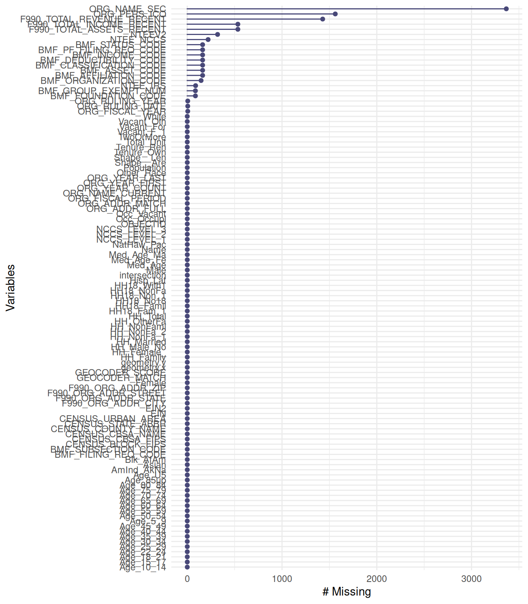
Yes, indeed there are…
NA and zero values likely mean the nonprofit did not need to submit to the IRS. It is impossible to know however, if a zero is actually a true zero. NA values could mean something else.
Thus, we will recode asset amount based on a threshold of greater than or equal to 500,000 as high asset and less than 500,000 (including zero) as not high asset. Note we keep our NA values with this recoding.
Note: F990_TOTAL_ASSETS_RECENT was ASSET_AMT with the old files
df_simplified<-df_simplified %>%
#create a variable about high asset amount (threshold being $500,000)
mutate(ASSET_High = case_when(F990_TOTAL_ASSETS_RECENT >= 500000 ~ TRUE,
F990_TOTAL_ASSETS_RECENT < 500000 ~ FALSE))Here we can see the NA values:
##
## FALSE TRUE <NA>
## 2692 587 534Now we will replace NA values with False as
well:
df_simplified <- df_simplified %>%
mutate(ASSET_High = replace_na(ASSET_High, FALSE)) #NA values will be coded as not high asset (if no cases match the other two F990_TOTAL_ASSETS_RECENT statements then code as FALSE) based on the above logicCheck that this worked and that there are no NA values now:
##
## FALSE TRUE <NA>
## 3226 587 0Now we will convert these to text as another variable and also create a log version of the asset amount to normalize it, as plots and analysis may be easier to interpret if there are many values that are high or low.
df_simplified<-df_simplified %>%
mutate(ASSET_High_text = case_when(ASSET_High == TRUE ~ "High Asset",
ASSET_High == FALSE ~ "Low Asset")) %>%
# we will also create new log of asset amount variable
mutate(ASSET_AMT_log = log(F990_TOTAL_ASSETS_RECENT)) # for assets of zero will be neg inf- so likely good to filter out if using thisNeighborhood category
Next we will modify the data to include a variable about the percentage of African American/Black people.
# create new Percent_AA variable by converting
# Blk_Afam (was `Normalized African American Population`) variable
# into a percentage and rounding
#dictionary shows: Blk_AfAm = Black or African American alone population (P3)
# Population = Total population (P3) https://data.baltimorecity.gov/datasets/baltimore::neighborhood-statistical-area-nsa-boundaries/about
df_simplified<-df_simplified %>%
mutate(Percent_AA =
round(Blk_AfAm/Population*100, digits = 2)) %>%
# create new Majority_AA variable that indicates if Percent_AA is greater than 50% or not
mutate(Majority_AA = case_when(
Percent_AA > 50 ~ "Yes",
Percent_AA < 50 ~ "No")) %>%
# create a new variable about this in text
mutate(Neighborhood = case_when(
Percent_AA > 50 ~ "Majority\nBlack",
Percent_AA < 50 ~ "Majority\nNon-Black")) %>%
# make this a factor and order by level appearance in the data
mutate(Neighborhood = as_factor(Neighborhood),
Neighborhood = forcats::fct_inorder(Neighborhood))Quantile data
To group the data by quantiles, we first remove organizations with zero assets because we don’t know if zero values are real. If assets are under 50,000, organizations can report as zero also.
Similarly, NA values could be anything between 0 and less than 50,000. Thus we aren’t sure what those asset amounts are.
# make a new dataframe without zeros and NA asset amounts
df_simplified_no_zero<-df_simplified %>%
drop_na(F990_TOTAL_ASSETS_RECENT) %>% #redundant but shows we are dropping NA values
filter(F990_TOTAL_ASSETS_RECENT>0) %>% # F990_TOTAL_ASSETS_RECENT must be greater than zero
# get quartiles
mutate(ASSET_quartile = ntile(F990_TOTAL_ASSETS_RECENT, 4)) %>%
# create new quartile variable that specifies quartiles by text
mutate(ASSET_quartile_text = case_when(ASSET_quartile == 1 ~ "1st_Quartile",
ASSET_quartile == 2 ~ "2nd_Quartile",
ASSET_quartile == 3 ~ "3rd_Quartile",
ASSET_quartile == 4 ~ "4th_Quartile"))
#Now check:
table(df_simplified_no_zero$ASSET_quartile, useNA = "always")##
## 1 2 3 4 <NA>
## 293 293 293 293 0df_simplified_no_zero%>% group_by(ASSET_quartile_text) %>% reframe(range = range(F990_TOTAL_ASSETS_RECENT))## # A tibble: 8 × 2
## ASSET_quartile_text range
## <chr> <dbl>
## 1 1st_Quartile 1
## 2 1st_Quartile 81320
## 3 2nd_Quartile 81474
## 4 2nd_Quartile 505103
## 5 3rd_Quartile 511070
## 6 3rd_Quartile 3592325
## 7 4th_Quartile 3607626
## 8 4th_Quartile 17635700000Without removal (except NAs)- since these asset amounts might influence quartiles.
df_simplified_no_removal<-df_simplified %>%
drop_na(F990_TOTAL_ASSETS_RECENT) %>% #dropping NA values
# get quartiles
mutate(ASSET_quartile = ntile(F990_TOTAL_ASSETS_RECENT, 4)) %>%
# create new quartile variable that specifies quartiles by text
mutate(ASSET_quartile_text = case_when(ASSET_quartile == 1 ~ "1st_Quartile",
ASSET_quartile == 2 ~ "2nd_Quartile",
ASSET_quartile == 3 ~ "3rd_Quartile",
ASSET_quartile == 4 ~ "4th_Quartile"))
#Now check:
table(df_simplified_no_removal$ASSET_quartile, useNA = "always")##
## 1 2 3 4 <NA>
## 820 820 820 819 0df_simplified_no_removal %>% group_by(ASSET_quartile_text) %>% reframe(range = range(F990_TOTAL_ASSETS_RECENT))## # A tibble: 8 × 2
## ASSET_quartile_text range
## <chr> <dbl>
## 1 1st_Quartile 0
## 2 1st_Quartile 0
## 3 2nd_Quartile 0
## 4 2nd_Quartile 0
## 5 3rd_Quartile 0
## 6 3rd_Quartile 118907
## 7 4th_Quartile 119606
## 8 4th_Quartile 17635700000Turns out this doesn’t really work because the 1st and 2nd quartiles can’t be distinguished as we don’t know if the values of 0 are actually some number below 50,000 and both quartlies have a max of less than 50,000. So we will stick with our removal.
National Taxonomy of Exempt Entities (NTEE) recoding
To provide more information to readers about what the nonprofits do, we will convert the National Taxonomy of Exempt Entities (NTEE) codes based on this and this (see page 15).
The NTEE_IRS variable appears to be the most complete
NTEE_IRS was NTEE_CD in the older raw files
df_simplified <-df_simplified %>%
mutate(NTEE_text = case_when(
str_starts(NTEE_IRS, pattern = "A")~ "Arts", # if NTEE_IRS starts with A make new variable value "Arts" etc.
str_starts(NTEE_IRS, pattern = "B") ~ "Education",
str_starts(NTEE_IRS, pattern = "C|D") ~ "Environment/Animals", # if NTEE_IRS value starts with C or D make new variable value "Environment/Animals"
str_starts(NTEE_IRS, pattern = "E|F|G|H") ~ "Health",
str_starts(NTEE_IRS, pattern = "I|J|K|L|M|N|O|P") ~ "Human Services",
str_starts(NTEE_IRS, pattern = "Q") ~ "International Affairs",
str_starts(NTEE_IRS, pattern = "R|S|T|U|V|W") ~ "Societal Benefit",
str_starts(NTEE_IRS, pattern = "X") ~ "Religious",
TRUE ~ "Other")) #everything else will be OtherAlso for the quantile data:
df_simplified_no_zero <-df_simplified_no_zero %>%
mutate(NTEE_text = case_when(
str_starts(NTEE_IRS, pattern = "A")~ "Arts", # if NTEE_IRS starts with A make new variable value "Arts" etc.
str_starts(NTEE_IRS, pattern = "B") ~ "Education",
str_starts(NTEE_IRS, pattern = "C|D") ~ "Environment/Animals", # if NTEE_IRS value starts with C or D make new variable value "Environment/Animals"
str_starts(NTEE_IRS, pattern = "E|F|G|H") ~ "Health",
str_starts(NTEE_IRS, pattern = "I|J|K|L|M|N|O|P") ~ "Human Services",
str_starts(NTEE_IRS, pattern = "Q") ~ "International Affairs",
str_starts(NTEE_IRS, pattern = "R|S|T|U|V|W") ~ "Societal Benefit",
str_starts(NTEE_IRS, pattern = "X") ~ "Religous",
TRUE~ "Other")) # everything else will be OtherVisualizations and Analysis
Deeper possible visualizations
First without log normalization figure:
df_simplified_no_zero %>%
ggplot(aes(y = F990_TOTAL_ASSETS_RECENT, x = Percent_AA)) +
geom_point() + geom_smooth(method = "loess")## `geom_smooth()` using formula = 'y ~ x'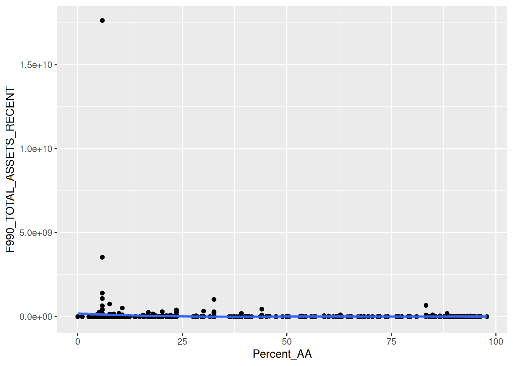
We can see that some of the dat points are much higher and this makes it challenging to see the lower data values.Now let’s look at normalized version.
Overall log Asset amount figure:
df_simplified_no_zero %>%
ggplot(aes(y = ASSET_AMT_log, x = Percent_AA)) +
geom_point() + geom_smooth(method = "loess")## `geom_smooth()` using formula = 'y ~ x'
Quartile plots
Quartiles with log asset data:
df_simplified_no_zero %>%
ggplot(aes(y = ASSET_AMT_log, x = Percent_AA)) +
geom_point() + facet_wrap(~ ASSET_quartile_text, scales = "free") +geom_smooth()## `geom_smooth()` using method = 'loess' and formula = 'y ~ x'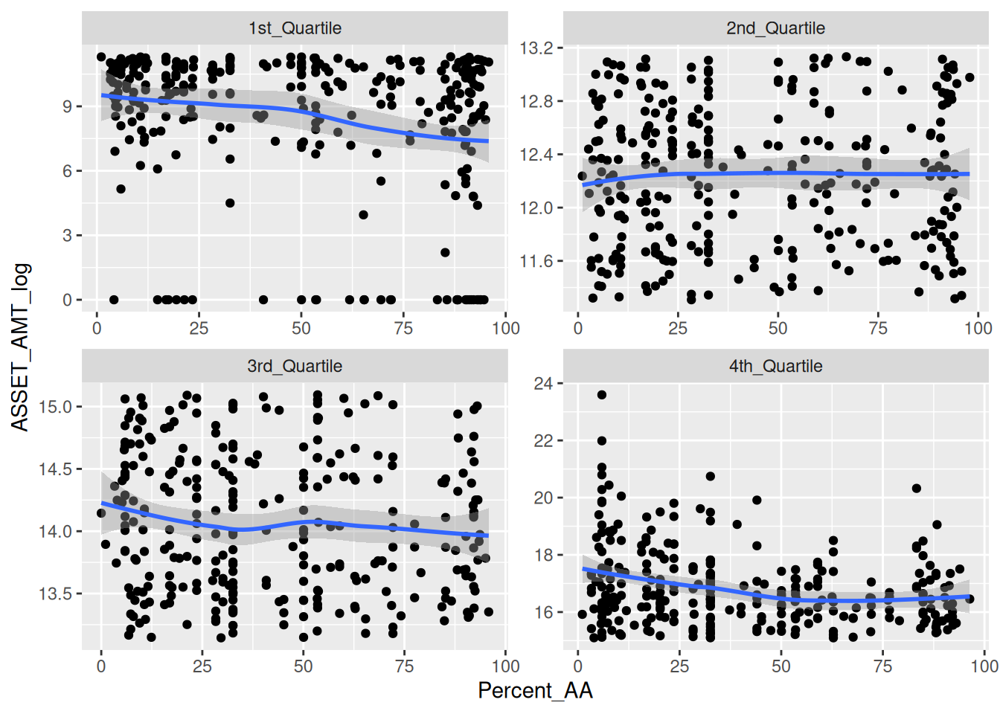
Look at log asset data for each NTEE type- remember the caveat that there are many organizations that are not included because of NA or zero value F990_TOTAL_ASSETS_RECENT. However, still we can see that there is a trend towards lower amount of assets for most categories even with this limited data.
df_simplified_no_zero %>% drop_na(NTEE_text) %>%
ggplot(aes(y = ASSET_AMT_log, x = Neighborhood)) +
geom_boxplot()+ geom_jitter(width = .08) +
facet_wrap(~ NTEE_text, scales = "free_y") +
geom_smooth(method = "lm", se=TRUE, aes(group=1))## `geom_smooth()` using formula = 'y ~ x'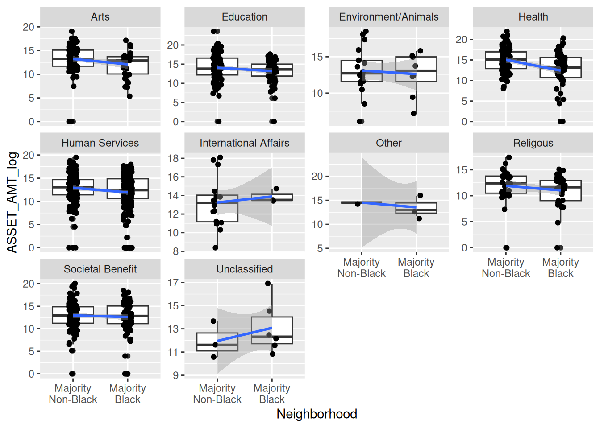
Compare all organizations by neighborhood AA status for log asset data. remember the caveat that there are many organizations that are not included because of NA or zero value F990_TOTAL_ASSETS_RECENT
df_simplified_no_zero %>%
ggplot(aes(y = ASSET_AMT_log, x = Neighborhood)) +
geom_boxplot()+ geom_jitter(width = .08) + geom_smooth(method = "lm", se=TRUE, aes(group=1))## `geom_smooth()` using formula = 'y ~ x'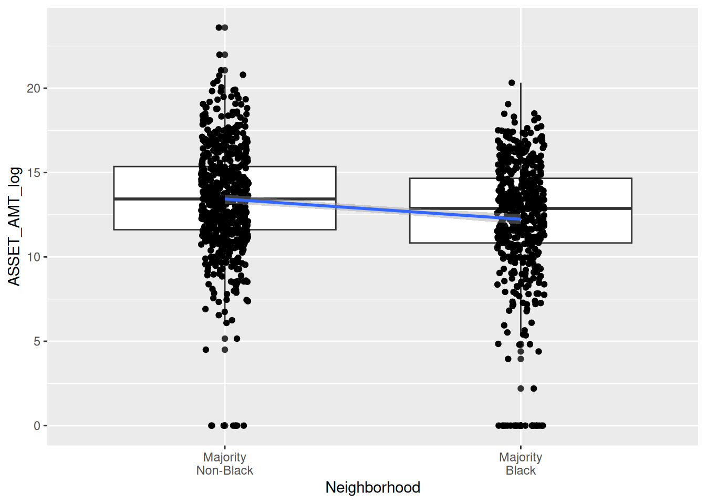
Association Tests
summary(glm(data = df_simplified_no_zero, F990_TOTAL_ASSETS_RECENT ~Percent_AA)) # for every increase in percent AA of the neighborhood there was a 266,249$ decrease in asset amount of the nonprofits in the neighborhood##
## Call:
## glm(formula = F990_TOTAL_ASSETS_RECENT ~ Percent_AA, data = df_simplified_no_zero)
##
## Coefficients:
## Estimate Std. Error t value Pr(>|t|)
## (Intercept) 77632029 27174844 2.857 0.00436 **
## Percent_AA -1015262 509330 -1.993 0.04646 *
## ---
## Signif. codes: 0 '***' 0.001 '**' 0.01 '*' 0.05 '.' 0.1 ' ' 1
##
## (Dispersion parameter for gaussian family taken to be 2.809674e+17)
##
## Null deviance: 3.2985e+20 on 1171 degrees of freedom
## Residual deviance: 3.2873e+20 on 1170 degrees of freedom
## AIC: 50417
##
## Number of Fisher Scoring iterations: 2# there is a less than 5% risk of concluding that an association exists between asset amount a percent AA of neighborhood when there is no actual association.
hist(df_simplified_no_zero$ASSET_AMT_log)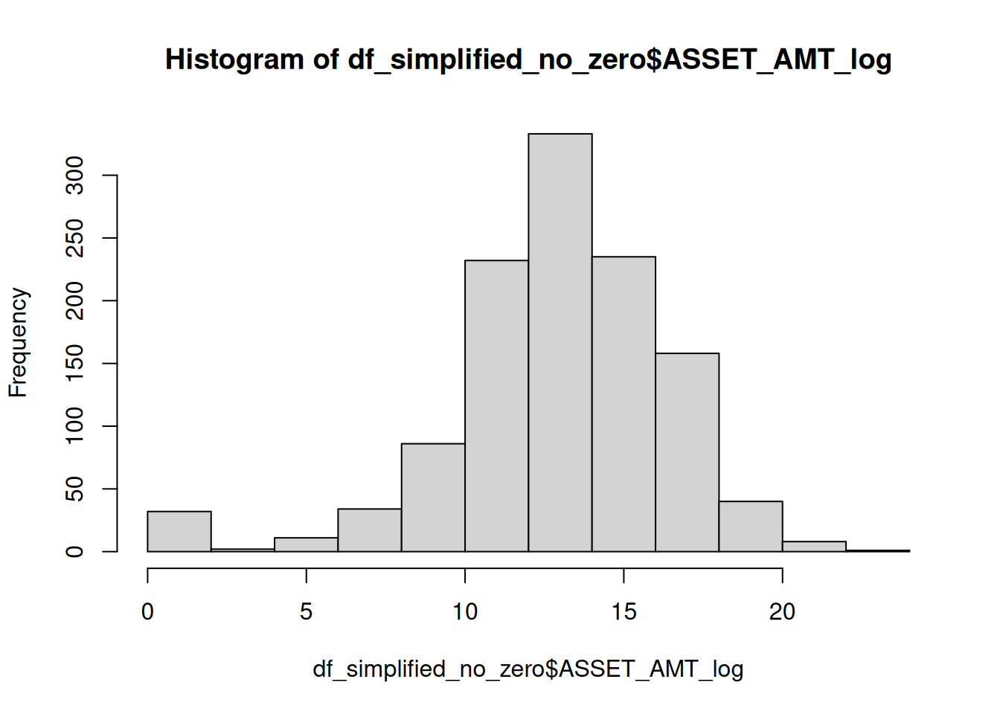
summary(glm(data = df_simplified_no_zero, ASSET_AMT_log~Percent_AA)) # for every increase in percent AA of the neighborhood there was a 266,249$ decrease in asset amount of the nonprofits in the neighborhood##
## Call:
## glm(formula = ASSET_AMT_log ~ Percent_AA, data = df_simplified_no_zero)
##
## Coefficients:
## Estimate Std. Error t value Pr(>|t|)
## (Intercept) 13.835217 0.179617 77.026 < 2e-16 ***
## Percent_AA -0.021262 0.003366 -6.316 3.81e-10 ***
## ---
## Signif. codes: 0 '***' 0.001 '**' 0.01 '*' 0.05 '.' 0.1 ' ' 1
##
## (Dispersion parameter for gaussian family taken to be 12.2748)
##
## Null deviance: 14851 on 1171 degrees of freedom
## Residual deviance: 14362 on 1170 degrees of freedom
## AIC: 6268.8
##
## Number of Fisher Scoring iterations: 2
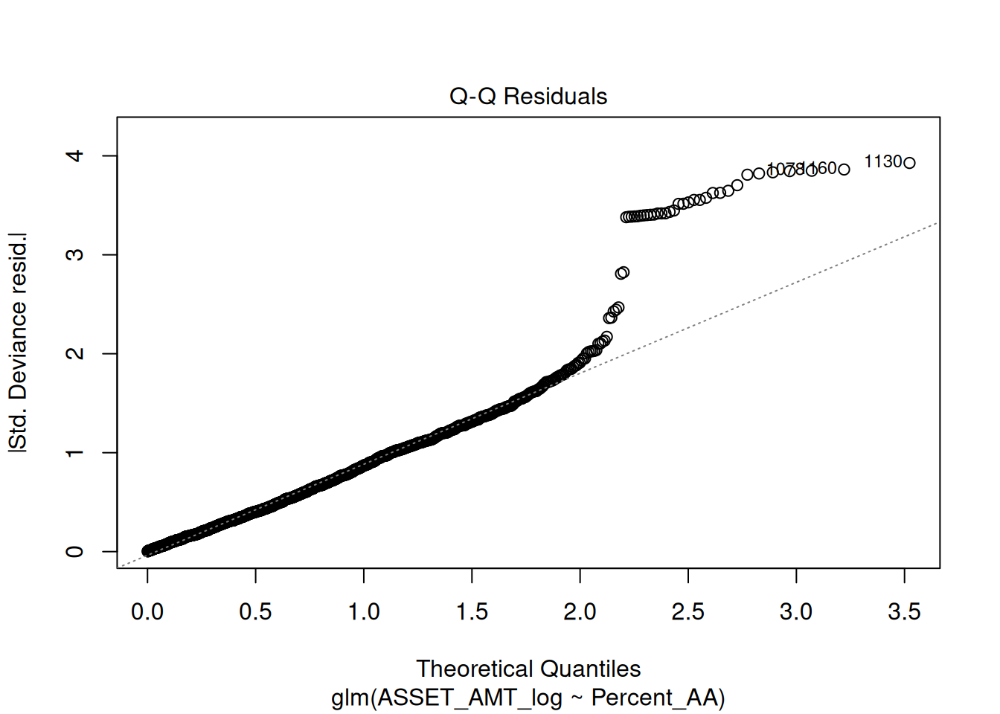

#nonparametric test - because the residiuals looked skewed in the above qqplot
cor.test(df_simplified_no_zero$F990_TOTAL_ASSETS_RECENT, df_simplified_no_zero$Percent_AA, method = "spearman", exact = FALSE)##
## Spearman's rank correlation rho
##
## data: df_simplified_no_zero$F990_TOTAL_ASSETS_RECENT and df_simplified_no_zero$Percent_AA
## S = 302793946, p-value = 1.015e-05
## alternative hypothesis: true rho is not equal to 0
## sample estimates:
## rho
## -0.1285373Look at quartiles with log asset data: remember the caveat that there are many organizations that are not included because of NA or zero value F990_TOTAL_ASSETS_RECENT
df_simplified_no_zero %>%
ggplot(aes(y = ASSET_AMT_log, x = Neighborhood)) +
geom_boxplot()+ geom_jitter(width = .08) + geom_smooth(method = "lm", se=TRUE, aes(group=1)) + facet_wrap(~ASSET_quartile_text, scales = "free_y")## `geom_smooth()` using formula = 'y ~ x'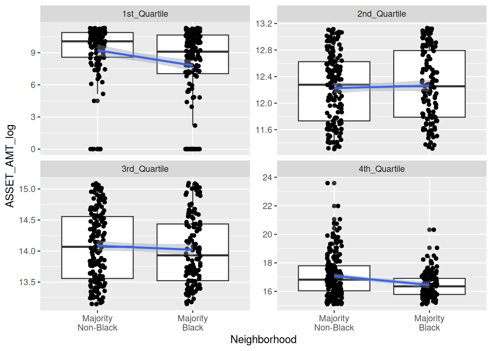
First we will remove geo data to make it easier to see results:
df_simplified_no_zero <-df_simplified_no_zero %>% st_drop_geometry()
df_simplified <-df_simplified %>% st_drop_geometry()First create data to make visualization easier caveat for the data: that there are many organizations that are not included because of NA or zero value F990_TOTAL_ASSETS_RECENT
quartile_data <-df_simplified_no_zero %>%
group_by(ASSET_quartile_text, Neighborhood) %>%
count()
quartile_data## # A tibble: 8 × 3
## # Groups: ASSET_quartile_text, Neighborhood [8]
## ASSET_quartile_text Neighborhood n
## <chr> <fct> <int>
## 1 1st_Quartile "Majority\nNon-Black" 137
## 2 1st_Quartile "Majority\nBlack" 156
## 3 2nd_Quartile "Majority\nNon-Black" 165
## 4 2nd_Quartile "Majority\nBlack" 128
## 5 3rd_Quartile "Majority\nNon-Black" 170
## 6 3rd_Quartile "Majority\nBlack" 123
## 7 4th_Quartile "Majority\nNon-Black" 182
## 8 4th_Quartile "Majority\nBlack" 111Create percentage variable for each quantile
quartile_data <- quartile_data %>%
group_by(ASSET_quartile_text) %>%
mutate(Percent = round(n/sum(n)*100))
quartile_data## # A tibble: 8 × 4
## # Groups: ASSET_quartile_text [4]
## ASSET_quartile_text Neighborhood n Percent
## <chr> <fct> <int> <dbl>
## 1 1st_Quartile "Majority\nNon-Black" 137 47
## 2 1st_Quartile "Majority\nBlack" 156 53
## 3 2nd_Quartile "Majority\nNon-Black" 165 56
## 4 2nd_Quartile "Majority\nBlack" 128 44
## 5 3rd_Quartile "Majority\nNon-Black" 170 58
## 6 3rd_Quartile "Majority\nBlack" 123 42
## 7 4th_Quartile "Majority\nNon-Black" 182 62
## 8 4th_Quartile "Majority\nBlack" 111 38Visuals…of the above data:
quart_plot <- quartile_data %>%
ggplot(aes(x= ASSET_quartile_text, y = Percent, fill = Neighborhood)) +
geom_col(position = position_dodge(width = .9))+
scale_y_continuous(labels = function(x) paste0(x, "%")) +
ylim(0,100) +
scale_fill_grey() +
theme_linedraw() +
geom_text(aes(label = paste0(Percent, "%")), position = position_dodge(width = .9), vjust = -.5) ## Scale for y is already present.
## Adding another scale for y, which will replace the existing scale.quart_plot + labs(x = "Quartile based on nonprofit asset amount", y = "Percentage of nonprofits in the asset quartile")
this does NOT include all 4,082 organizations
Overall Percentage Plot
First let’s get a count of each - NOTE we are keeping zero values and NA as low asset! The NA neighborhood means there is only one neighborhood that did not fit the categories or have information. We can drop this neighborhood.
## # A tibble: 4 × 3
## ASSET_High_text Neighborhood n
## <chr> <fct> <int>
## 1 High Asset "Majority\nNon-Black" 352
## 2 High Asset "Majority\nBlack" 235
## 3 Low Asset "Majority\nNon-Black" 1282
## 4 Low Asset "Majority\nBlack" 1944df_simplified <-df_simplified %>%
drop_na(Neighborhood)
df_simplified %>%
count(ASSET_High_text, Neighborhood)## # A tibble: 4 × 3
## ASSET_High_text Neighborhood n
## <chr> <fct> <int>
## 1 High Asset "Majority\nNon-Black" 352
## 2 High Asset "Majority\nBlack" 235
## 3 Low Asset "Majority\nNon-Black" 1282
## 4 Low Asset "Majority\nBlack" 1944High_asset_data <-df_simplified %>%
group_by(ASSET_High_text, Neighborhood) %>%
count()
High_asset_data## # A tibble: 4 × 3
## # Groups: ASSET_High_text, Neighborhood [4]
## ASSET_High_text Neighborhood n
## <chr> <fct> <int>
## 1 High Asset "Majority\nNon-Black" 352
## 2 High Asset "Majority\nBlack" 235
## 3 Low Asset "Majority\nNon-Black" 1282
## 4 Low Asset "Majority\nBlack" 1944Create percentage variable for each category:
High_asset_data <- High_asset_data %>%
group_by(Neighborhood) %>%
mutate(Percent_AA_cat = round(n/sum(n)*100))
High_asset_data## # A tibble: 4 × 4
## # Groups: Neighborhood [2]
## ASSET_High_text Neighborhood n Percent_AA_cat
## <chr> <fct> <int> <dbl>
## 1 High Asset "Majority\nNon-Black" 352 22
## 2 High Asset "Majority\nBlack" 235 11
## 3 Low Asset "Majority\nNon-Black" 1282 78
## 4 Low Asset "Majority\nBlack" 1944 89Visuals…of the above data:
High_asset_data %>%
ggplot(aes(x= Neighborhood, y = Percent_AA_cat, fill = ASSET_High_text)) +
geom_col(position = position_dodge(width = .9))+
scale_y_continuous(labels = function(x) paste0(x, "%")) +
ylim(0,100) +
geom_text(aes(label = paste0(Percent_AA_cat, "%")), position = position_dodge(width = .9), vjust = -.5) +
ylab("Percent of Neighborhood Category") +
theme_linedraw() +
scale_fill_grey() +
theme(legend.title = element_blank())## Scale for y is already present.
## Adding another scale for y, which will replace the existing scale.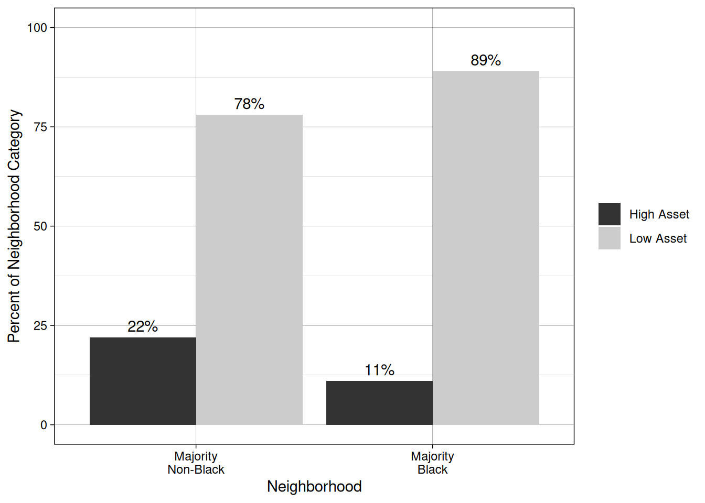
this includes all 4,082 organizationsHigh vs non asset by category
First create data to make visualization easier
High_asset_data <-df_simplified %>%
group_by(ASSET_High_text, Neighborhood, NTEE_text) %>%
count()
High_asset_data## # A tibble: 36 × 4
## # Groups: ASSET_High_text, Neighborhood, NTEE_text [36]
## ASSET_High_text Neighborhood NTEE_text n
## <chr> <fct> <chr> <int>
## 1 High Asset "Majority\nNon-Black" Arts 48
## 2 High Asset "Majority\nNon-Black" Education 59
## 3 High Asset "Majority\nNon-Black" Environment/Animals 8
## 4 High Asset "Majority\nNon-Black" Health 71
## 5 High Asset "Majority\nNon-Black" Human Services 88
## 6 High Asset "Majority\nNon-Black" International Affairs 8
## 7 High Asset "Majority\nNon-Black" Other 2
## 8 High Asset "Majority\nNon-Black" Religious 12
## 9 High Asset "Majority\nNon-Black" Societal Benefit 56
## 10 High Asset "Majority\nBlack" Arts 15
## # ℹ 26 more rows#Create percentage variable for each category
High_asset_data <- High_asset_data %>%
group_by(NTEE_text) %>%
mutate(Percent_ntee_cat = round(n/sum(n)*100))
High_asset_data## # A tibble: 36 × 5
## # Groups: NTEE_text [9]
## ASSET_High_text Neighborhood NTEE_text n Percent_ntee_cat
## <chr> <fct> <chr> <int> <dbl>
## 1 High Asset "Majority\nNon-Black" Arts 48 15
## 2 High Asset "Majority\nNon-Black" Education 59 14
## 3 High Asset "Majority\nNon-Black" Environment/Ani… 8 11
## 4 High Asset "Majority\nNon-Black" Health 71 24
## 5 High Asset "Majority\nNon-Black" Human Services 88 8
## 6 High Asset "Majority\nNon-Black" International A… 8 17
## 7 High Asset "Majority\nNon-Black" Other 2 2
## 8 High Asset "Majority\nNon-Black" Religious 12 1
## 9 High Asset "Majority\nNon-Black" Societal Benefit 56 11
## 10 High Asset "Majority\nBlack" Arts 15 5
## # ℹ 26 more rowsVisuals…of the above data:
High_asset_data %>%
ggplot(aes(x= Neighborhood, y = Percent_ntee_cat, fill = ASSET_High_text)) +
geom_col(position = position_dodge(width = .9))+
scale_y_continuous(labels = function(x) paste0(x, "%")) +
ylim(0, 100) +
geom_text(aes(label = paste0(Percent_ntee_cat, "%")), position = position_dodge(width = .9), vjust = -.5) + facet_wrap(~NTEE_text) +
theme_linedraw() +
scale_fill_grey() +
theme(legend.title = element_blank()) +
ylab("Percentage for each category")this includes all 4,082 organizations
Count plots/Tables
Different kinds of orgs
library(forcats)
df_simplified %>% group_by(NTEE_text) %>%summarize(count = n()) %>%
mutate(NTEE_text = str_replace(string = NTEE_text, pattern = "NA", replacement = "Unclassified")) %>%
mutate(Percentage = round(count/sum(count)*100, digits = 2)) %>%
arrange(NTEE_text)## # A tibble: 9 × 3
## NTEE_text count Percentage
## <chr> <int> <dbl>
## 1 Arts 327 8.58
## 2 Education 413 10.8
## 3 Environment/Animals 76 1.99
## 4 Health 302 7.92
## 5 Human Services 1126 29.5
## 6 International Affairs 46 1.21
## 7 Other 115 3.02
## 8 Religious 891 23.4
## 9 Societal Benefit 517 13.6Total_NTEE <-df_simplified %>% group_by(NTEE_text) %>%summarize(total_count = n()) %>%
mutate(NTEE_text = str_replace(string = NTEE_text, pattern = "NA", replacement = "Unclassified")) %>%
arrange(NTEE_text)df_simplified %>%
group_by(NTEE_text, Neighborhood) %>%
summarize(count = n()) %>%
mutate(NTEE_text = as_factor(NTEE_text)) %>%
ggplot(aes(x = fct_reorder(NTEE_text, count, min), y = count , fill = Neighborhood)) +
scale_fill_viridis_d() +
geom_col(position =position_dodge(width = .9)) +
ylab ("Number of Organizations") +
theme_linedraw() +
theme(axis.text.x = element_text(angle = 60, vjust = .5),
axis.title.x = element_blank()) +
scale_fill_grey()## `summarise()` has grouped output by 'NTEE_text'. You can override using the
## `.groups` argument.
## Scale for fill is already present. Adding another scale for fill, which will
## replace the existing scale.
This includes all 4,082 organizations There was no removal of organizations based on asset amount, just to get a sense of what oganizations are in Baltimore.
plot2 <- df_simplified %>%
mutate(NTEE_text = as_factor(NTEE_text),
NTEE_text = forcats::fct_relevel(NTEE_text, "International Affairs", "Environment/Animals", "Arts", "Religious", "Health","Education", "Societal Benefit", "Human Services", "NA" )) %>%
group_by(NTEE_text, Neighborhood, ASSET_High_text) %>%
summarize(count = n()) %>%
ggplot(aes(x = NTEE_text, y = count , fill = Neighborhood)) +
geom_col(position =position_dodge(width = .9)) +
facet_grid(rows = vars(ASSET_High_text)) +
ylab ("Number of Organizations") +
theme_linedraw() +
theme(axis.text.x = element_text(angle = 60, vjust = .5),
axis.title.x = element_blank()) +
scale_fill_grey()## Warning: There was 1 warning in `mutate()`.
## ℹ In argument: `NTEE_text = forcats::fct_relevel(...)`.
## Caused by warning:
## ! 1 unknown level in `f`: NA## `summarise()` has grouped output by 'NTEE_text', 'Neighborhood'. You can
## override using the `.groups` argument.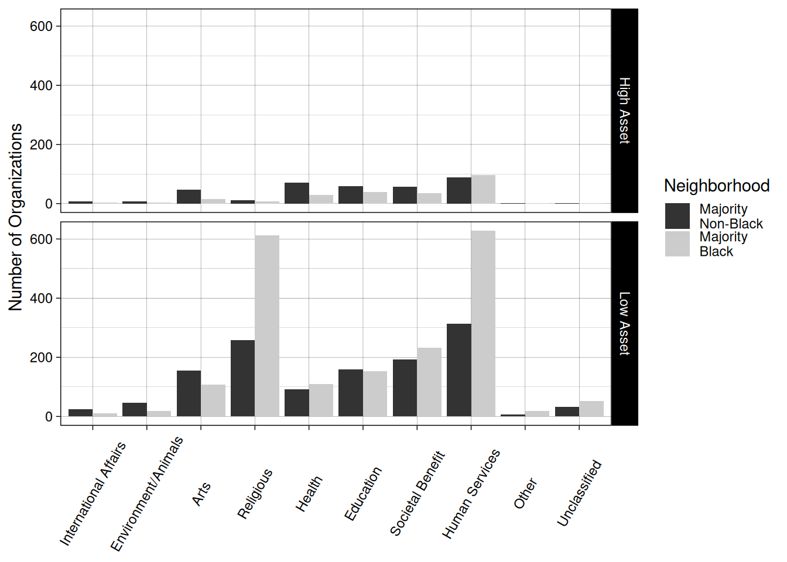
This includes all 4,082 organizations There was no removal of organizations based on asset amount, just to get a sense of what oganizations are in Baltimore.
High Asset Orgs
Based on Asset Amount (F990_TOTAL_ASSETS_RECENT)
High_counts <- df_simplified %>%
mutate(NTEE_text = as_factor(NTEE_text),
NTEE_text = forcats::fct_relevel(NTEE_text, "International Affairs", "Environment/Animals", "Arts", "Religious", "Health","Education", "Societal Benefit", "Human Services", "NA" )) %>%
group_by(NTEE_text, ASSET_High_text) %>%
summarize(count = n()) %>% filter(ASSET_High_text == "High Asset") %>%
mutate(NTEE_text = str_replace(string = NTEE_text, pattern = "NA", replacement = "Unclassified"))## Warning: There was 1 warning in `mutate()`.
## ℹ In argument: `NTEE_text = forcats::fct_relevel(...)`.
## Caused by warning:
## ! 1 unknown level in `f`: NA## `summarise()` has grouped output by 'NTEE_text'. You can override using the
## `.groups` argument.full_join(Total_NTEE, High_counts, join_by(NTEE_text)) %>%
mutate("Percentage_of_each_code" = round(count/total_count *100, digits = 2)) %>%
arrange(NTEE_text) ## # A tibble: 9 × 5
## NTEE_text total_count ASSET_High_text count Percentage_of_each_c…¹
## <chr> <int> <chr> <int> <dbl>
## 1 Arts 327 High Asset 63 19.3
## 2 Education 413 High Asset 99 24.0
## 3 Environment/Animals 76 High Asset 12 15.8
## 4 Health 302 High Asset 101 33.4
## 5 Human Services 1126 High Asset 184 16.3
## 6 International Affairs 46 High Asset 11 23.9
## 7 Other 115 High Asset 5 4.35
## 8 Religious 891 High Asset 20 2.24
## 9 Societal Benefit 517 High Asset 92 17.8
## # ℹ abbreviated name: ¹Percentage_of_each_codeBased on BMF_ASSET_CODE (Where 5 means >=500,000)
High_counts <- df_simplified %>%
mutate(NTEE_text = as_factor(NTEE_text),
NTEE_text = forcats::fct_relevel(NTEE_text, "International Affairs", "Environment/Animals", "Arts", "Religious", "Health","Education", "Societal Benefit", "Human Services", "NA" )) %>%
mutate(ASSET_CD_High = case_when(BMF_ASSET_CODE >= 5 ~ "High",
BMF_ASSET_CODE < 5 ~ "Low")) %>%
group_by(NTEE_text, ASSET_CD_High) %>%
summarize(count = n()) %>% filter(ASSET_CD_High == "High") %>%
mutate(NTEE_text = str_replace(string = NTEE_text, pattern = "NA", replacement = "Unclassified"))## Warning: There was 1 warning in `mutate()`.
## ℹ In argument: `NTEE_text = forcats::fct_relevel(...)`.
## Caused by warning:
## ! 1 unknown level in `f`: NA## `summarise()` has grouped output by 'NTEE_text'. You can override using the
## `.groups` argument.full_join(Total_NTEE, High_counts, join_by(NTEE_text)) %>%
mutate("Percentage_of_each_code" = round(count/total_count *100, digits = 2)) %>%
arrange(NTEE_text) ## # A tibble: 9 × 5
## NTEE_text total_count ASSET_CD_High count Percentage_of_each_code
## <chr> <int> <chr> <int> <dbl>
## 1 Arts 327 High 63 19.3
## 2 Education 413 High 99 24.0
## 3 Environment/Animals 76 High 12 15.8
## 4 Health 302 High 100 33.1
## 5 Human Services 1126 High 186 16.5
## 6 International Affairs 46 High 11 23.9
## 7 Other 115 High 5 4.35
## 8 Religious 891 High 25 2.81
## 9 Societal Benefit 517 High 91 17.6Counts across neighborhood type and NTEE
BMF_ASSET_CODE was ASSET_CD in older raw files
todo: this is misaligned… need to fix
Count_by_neighborhood_type <- df_simplified %>%
mutate(NTEE_text = as_factor(NTEE_text),
NTEE_text = forcats::fct_relevel(NTEE_text, "International Affairs", "Environment/Animals", "Arts", "Religious", "Health","Education", "Societal Benefit", "Human Services", "NA" )) %>%
mutate(ASSET_CD_High = case_when(BMF_ASSET_CODE >= 5 ~ "High",
BMF_ASSET_CODE < 5 ~ "Low")) %>%
group_by(NTEE_text, Majority_AA) %>%
summarize(count = n()) %>%
mutate(NTEE_text = str_replace(string = NTEE_text, pattern = "NA", replacement = "Unclassified"))## Warning: There was 1 warning in `mutate()`.
## ℹ In argument: `NTEE_text = forcats::fct_relevel(...)`.
## Caused by warning:
## ! 1 unknown level in `f`: NA## `summarise()` has grouped output by 'NTEE_text'. You can override using the
## `.groups` argument.renamed_perc_data <-full_join(Total_NTEE, Count_by_neighborhood_type) %>%
mutate("Percentage_of_each_code" = round(count/total_count *100, digits = 2)) %>%
arrange(NTEE_text) %>%
pivot_wider(names_from = Majority_AA, values_from = count:Percentage_of_each_code) %>%
dplyr::select(NTEE_text, total_count, count_Yes, Percentage_of_each_code_Yes, count_No, Percentage_of_each_code_No) %>%
pivot_longer(-NTEE_text) %>%
mutate(name = case_when(
name == "total_count" ~ "Total",
name == "count_Yes" ~"Count_Majority_Black",
name == "Percentage_of_each_code_Yes" ~ "Perc_Maj_Black",
name == "count_No" ~ "Count_Non_Black",
name == "Percentage_of_each_code_No" ~ "Perc_Non_Black"))## Joining with `by = join_by(NTEE_text)` renamed_perc_data %>%
pivot_wider(names_from = name, values_from = value) %>%
mutate(ratio = Count_Majority_Black/Count_Non_Black)## # A tibble: 9 × 7
## NTEE_text Total Count_Majority_Black Perc_Maj_Black Count_Non_Black
## <chr> <dbl> <dbl> <dbl> <dbl>
## 1 Arts 327 123 37.6 204
## 2 Education 413 194 47.0 219
## 3 Environment/Animals 76 22 29.0 54
## 4 Health 302 140 46.4 162
## 5 Human Services 1126 724 64.3 402
## 6 International Affai… 46 14 30.4 32
## 7 Other 115 73 63.5 42
## 8 Religious 891 621 69.7 270
## 9 Societal Benefit 517 268 51.8 249
## # ℹ 2 more variables: Perc_Non_Black <dbl>, ratio <dbl>Distribution of percent AA
Now to take a look at if 50% African American makes sense. What do the neighborhoods look like?
Name was neighborhood name in the old data
# get the neighborhood values if no removing rows for nonprofits with NA or zero assets
neighborhood_AAperc <- df_simplified %>%
distinct(Name, Percent_AA)
# get the neighborhood values after removing rows for nonprofits with NA or zero assets
neighborhood_AAperc_nozero <- df_simplified_no_zero %>%
distinct(Name, Percent_AA)We can see that there are many neighborhoods that have a more extreme percentage.
# get the neighborhood values if no removing rows for nonprofits with NA or zero assets
neighborhood_AAperc%>% pull(Percent_AA) %>% hist(main = "Black Percentage of Neighborhoods for each nonprofit")
# get the neighborhood values after removing rows for nonprofits with NA or zero assets
neighborhood_AAperc_nozero %>% pull(Percent_AA) %>% hist(main = "Black Percentage of Neighborhoods \n (removed neighborhoods with only zero or NA assets)")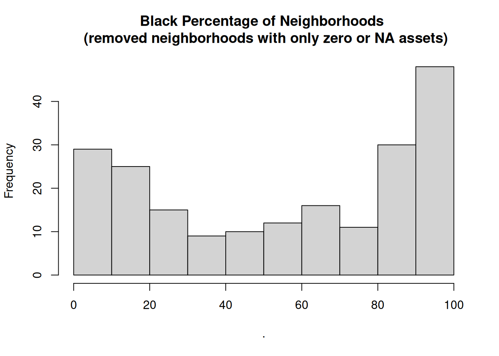